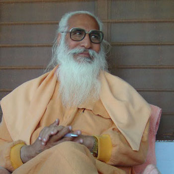

- India, Uttarkhand, Dehra Dun
- Hindouisme
- http://sadhanakendra.org/
Fondé autour du maître
Chandra Swami .
- Le cadre très calme, près de la rivière Yamuna
- La présence du maître Chandra Swami pour la méditation, les repas et le satsang
- Un cadre de 4 heures de méditation par jour
- Des bhajans nourrissants et melodieux
- Une atmosphère centrée et ouverte
- Présence de nombreux occidentaux, en particulier français car le premier disciple occidental de Chandra Swami était français (Yvan Amar)
L'ashram fonctionne avec les donations. Pour information, le coût par personne et par jour est estimé à 500 RS.
L'hébergement se fait en chambres, le plus souvent doubles.
Il est obligatoire de participer aux 4 sessions de méditation journalières, ainsi qu'au séva (service désintéressé pour l'ashram) d'environ deux heures par jour. Il est vivement conseillé de venir au
satsangs .
Chandra Swami est ancré dans sa tradition, l'hindouisme. Il acceuille des visiteurs de toutes religions et leur conseille de garder leur foi d'origine. Il a une grande affection pour Jésus Christ.
La Sadhana Intégrale
(Sont ici réunies les recommandations les plus fréquentes de Swamiji en vue d'une pratique spirituelle complète et équilibrée.)
- Pratiquez la méditation en position assise quotidiennement et à heures fixes, au moins 2 fois par jour, tôt le matin et le soir.
- Cultivez le souvenir de Dieu par la pratique du japa (répétition d'un saint nom de Dieu qui vous inspire foi et dévotion). La pratique du japa est une manière très scientifique de calmer le mental et purifier le subconscient.
- Priez le Divin de vous accorder détachement intérieur, lucidité et vigilance. Ce que l'effort personnel ne peut atteindre, la prière à coup sûr l'obtient.
- Servez les pauvres et les nécessiteux au nom de Dieu.
- Servez les sages et les saints qui ont réalisé Dieu ou qui Lui sont totalement consacrés. Recherchez la compagnie des sages et des saints dont vous tirez inspiration. Évitez ceux qui n'adhèrent pas aux valeurs spirituelles et morales.
- Lisez les Écritures saintes et méditez-les. Lisez les biographies des grands sages et saints, ainsi que les ouvrages spirituels susceptibles d'intensifier votre aspiration à suivre le chemin spirituel et à pratiquer la sadhana.
- Pratiquez la maîtrise du mental et des sens.
- Faites des exercices respiratoires pour rendre votre respiration légère, lente, profonde et rythmée.
- Soyez patients. Acquérir la parfaite maîtrise de son mental peut demander bien des années, parfois même bien des vies. Une pratique régulière et un intérêt profondément ancré sont indispensables dans la sadhana, de même que l'esprit de persévérance.
- Méditez encore et encore sur la nature impermanente des objets, situations et relations de ce monde.
- Méditez encore et encore sur la mort. C'est un bon moyen de développer le détachement intérieur à l'égard de ce monde du nom et de la forme. Vairagya, l'esprit de détachement intérieur à l'égard du monde, est une condition essentielle pour qui veut plonger profondément dans son Être véritable, éternel et immortel.
- Acquittez-vous de vos obligations sociales et familiales au nom de Dieu.
- Aimez et servez vos parents. Témoignez-leur le respect qui leur est dû.
- Ayez de moins en moins de désirs profanes.
- Renoncez à toutes les mauvaises habitudes.
- Menez une vie très simple et très intègre.
- Que l'expérience directe de Dieu soit votre raison de vivre.
Prière
Ô Seigneur
Refuge du sans refuge,
Maître suprême de cet univers,
Que le monde entier soit heureux,
Que le malveillant devienne bienveillant,
Que chaque être vivant désire le bonheur de l'autre,
Que nos cœurs soient animés par l'amour mutuel et un esprit d'entraide,
Et, libre de tout égoïsme, que notre cœur se tourne spontanément vers Toi.
Ô Seigneur suprême,
Devant toi qui es toute pureté,
Qui es l'incarnation d'une puissance infinie,
Qui es la source inépuisable de la Connaissance et de la Joie,
Qui es Amour et Lumière intarissables,
Du plus profond de mon amour,
Je me prosterne respectueusement encore et encore.
Ô Seigneur des seigneurs,
Qui es à la fois immanent et transcendant,
Et Un sans second,
Je prends refuge en Toi.
Je t'en prie, prends-moi en Toi;
Attire-moi toujours plus près de Toi;
Accorde-moi l'entière protection de Ta main bienveillante.
Mon Dieu ! Je suis à Toi, je suis à Toi, je suis à Toi.
Quoi que je sois, je suis à Toi;
Qui que je sois, je prends refuge en Toi.
Ô Seigneur de tous les êtres,
Par Ta grâce, que mon corps reste sain,
Que mon cœur devienne pur et limpide,
Que ma compréhension soit claire et pénétrante,
Que mon esprit soit stable et paisible.
Mon Dieu, par Ta grâce, que ma vie entière, purifiée et transformée,
Soit totalement consacrée à Ton souvenir,
A Ton service et à Ta contemplation.
Ô Seigneur miséricordieux,
Donne-moi la force de Te chercher et de Te voir,
Donne-moi la force de me chercher et de me voir,
Donne-moi la force de voir la Vérité et de vivre la Vérité.
Seigneur ! Lorsque pour moi le temps sera venu
De quitter mon corps physique,
Je t'en prie, qu'il me soit permis
De me souvenir de Toi et de Toi seul !
Ô Seigneur ! Je t'en supplie,
Libères-moi de toutes mes faiblesses !
En m'absorbant en Toi,
Seigneur, rends-moi parfait !
Je Te salue mille et mille fois.
OM shanti, shanti, shanti (Om, Paix, Paix, Paix)